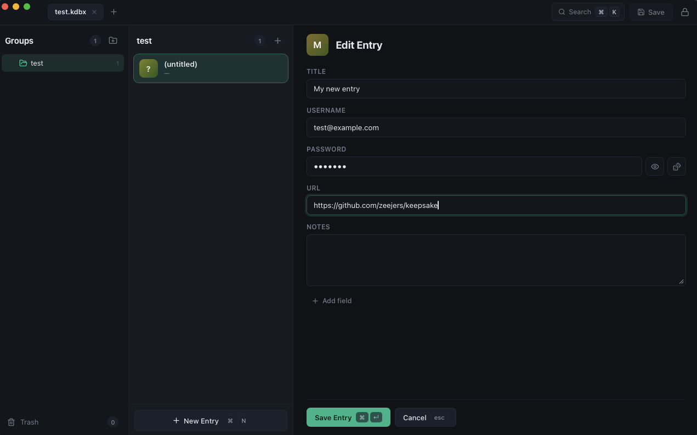

Keepsake
A fast, keyboard-first password manager for KeePass .kdbx files. Beautiful on the desktop, at home on your phone.
Keepsake for macOS
For Apple Silicon and Intel Macs. Not yet notarized: on first launch, click Done on the warning, then System Settings → Privacy & Security → Open Anyway. One-time only.
Keepsake for Windows
For Windows 10 and 11. SmartScreen may ask you to confirm the first run of an unsigned installer.
Keepsake for Linux
The AppImage runs on any distribution; native packages for Debian/Ubuntu and Fedora/RHEL.
Keepsake for Android
Sideload the APK: your phone will ask you to allow installs from your browser the first time. A Play Store listing is planned.
Free & open source · View on GitHub

Your vault, unchanged
Works directly on standard kdbx 3 & 4 files with Argon2. Fully compatible with KeePassXC, KeePassium, and the rest of the ecosystem. No import, no lock-in.
Keyboard-first
Fuzzy search everything, create entries in place, copy credentials, and jump between vaults without touching the mouse. Press ? for the full cheat sheet.
Dropbox sync
Connect once and open vaults straight from Dropbox on every device. Saves upload automatically, with conflict copies protecting simultaneous edits.
Touch ID
Unlock with your fingerprint on macOS. The master password lives in your system keychain, gated by biometrics with a device-password fallback.
Careful with secrets
The clipboard clears itself 45 seconds after copying, notes stay blurred until revealed, and a backup is written beside your vault on every save.
Everything in the format
Groups, entries, custom fields, file attachments, edit history, and trash: the full KeePass model, in a clean three-pane layout.